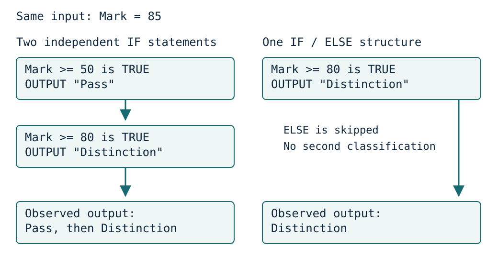

Write alternatives and nested decisions
Visual overview
Independent decisions and exclusive alternatives follow different paths

Visual transcript
- Both programs receive Mark 85.
- The independent IF tests Mark >= 50 and Mark >= 80 are both true: Pass and Distinction are both output.
- The exclusive version tests Mark >= 80 first. TRUE outputs Distinction and skips ELSE, giving one classification.
Select a branch
An IF statement executes its THEN block when the condition is true. An optional ELSE block handles the false outcome. ENDIF closes that decision. Two independent IF statements can both execute their blocks; IF with ELSE selects only one of its alternatives.
Nest a decision within one branch
Nesting puts a second decision inside a branch of the first. For adult membership, check Age >= 18 first and check Member only inside the adult branch. Give each IF its own ENDIF and indent consistently so the reader can identify which ELSE belongs to which decision.
Follow control after the branch
After a chosen IF branch finishes, execution continues after its matching ENDIF. An ELSE attaches to one IF, not to every earlier condition. Indentation and matching ENDIF statements make this visible; a branch that is not selected does not execute its inner tests.
Four combinations in the membership program
| Age | Member | Inner decision reached? | Output |
|---|---|---|---|
| 17 | FALSE | No | Junior |
| 17 | TRUE | No | Junior |
| 18 | FALSE | Yes | Adult visitor |
| 18 | TRUE | Yes | Adult member |
Choose independent or exclusive actions from the requirement
Two separate IF statements can both be true. That is correct when two independent actions are required, such as counting passes and counting merits. A single classification needs exclusive alternatives: test the highest threshold first, then place the lower-threshold decision in ELSE. At 85, the two programs below intentionally have different output contracts.
Worked example · Implement age and membership rules
- Requirements and starting conditions
Input a non-negative INTEGER Age and BOOLEAN Member. Under 18 means Junior; otherwise classify by membership.
- Cambridge pseudocode
DECLARE Age : INTEGER DECLARE Member : BOOLEAN INPUT Age INPUT Member IF Age >= 18 THEN IF Member THEN OUTPUT "Adult member" ELSE OUTPUT "Adult visitor" ENDIF ELSE OUTPUT "Junior" ENDIF - Expected result
17 / TRUE gives Junior; 18 / TRUE gives Adult member; 19 / FALSE gives Adult visitor.
Worked example · Perform two independently required actions
- Requirements and starting conditions
Mark is an INTEGER from 0 to 100. Output Pass if it is >= 50; independently output Distinction if it is >= 80.
- Cambridge pseudocode
DECLARE Mark : INTEGER INPUT Mark IF Mark >= 50 THEN OUTPUT "Pass" ENDIF IF Mark >= 80 THEN OUTPUT "Distinction" ENDIF - Expected result
85 produces both Pass and Distinction; 50 produces Pass; 49 produces no output.
Worked example · Report exactly one classification
- Requirements and starting conditions
Mark is an INTEGER from 0 to 100. Output only Distinction from 80, otherwise Pass from 50, otherwise Fail.
- Cambridge pseudocode
DECLARE Mark : INTEGER INPUT Mark IF Mark >= 80 THEN OUTPUT "Distinction" ELSE IF Mark >= 50 THEN OUTPUT "Pass" ELSE OUTPUT "Fail" ENDIF ENDIF - Expected result
85 and 80 produce Distinction; 79 and 50 produce Pass; 49 produces Fail.
Core explanation · Exam essentials
- An IF/ELSE selects one branch; separate IF statements can both execute.
- In nested selection, the outer branch determines whether the inner decision is reached.